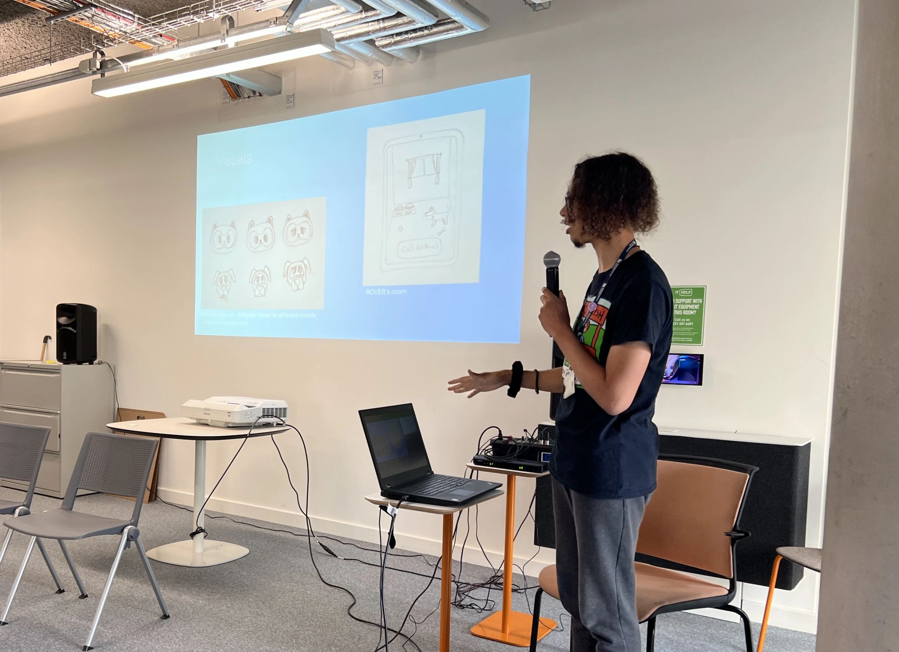

Where I'm currently at:
In my first year of Birmingham City University, I worked with Python, C#, Unity, Unreal Engine (Blueprints), and 3D modelling in Maya.
I love building games, designing and implementing cool features, as well as creating assets. I'm especially passionate about coding and problem-solving, but I enjoy exploring all aspects of development.
In the summer holiday, after completing my first year of university, I participated in a Micro-Placement opportunity at TG0. During this placement, I mainly worked remotely to design and develop a game to help make stroke rehabilitation fun!
My history:
I started coding in secondary school using Python and Scratch, and quickly became interested in how games are made. I played around in Unity (using C#) to create a game around June 2020, following tutorials and adding basic features like left/right movement and a way to respawn.
During my A-Levels, I built a 2D game in Unity called Tree Assassin with moving enemies, a health system, and my own custom sprites. I designed multiple levels, each with a different theme, and sprinkled collectables all throughout.
Since starting my degree in Computer Games Technology at BCU, I've worked with Unity, Unreal Engine, Maya, Python and many more tools. I will share some of my achievements and lessons learned throughout this website I made.